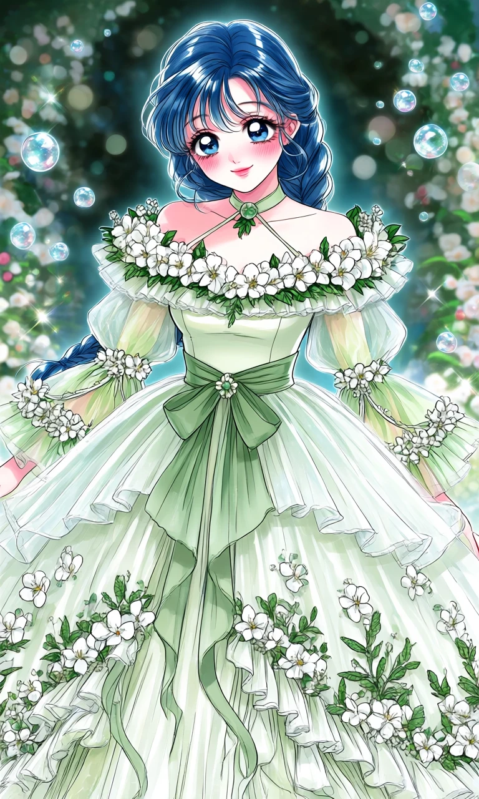
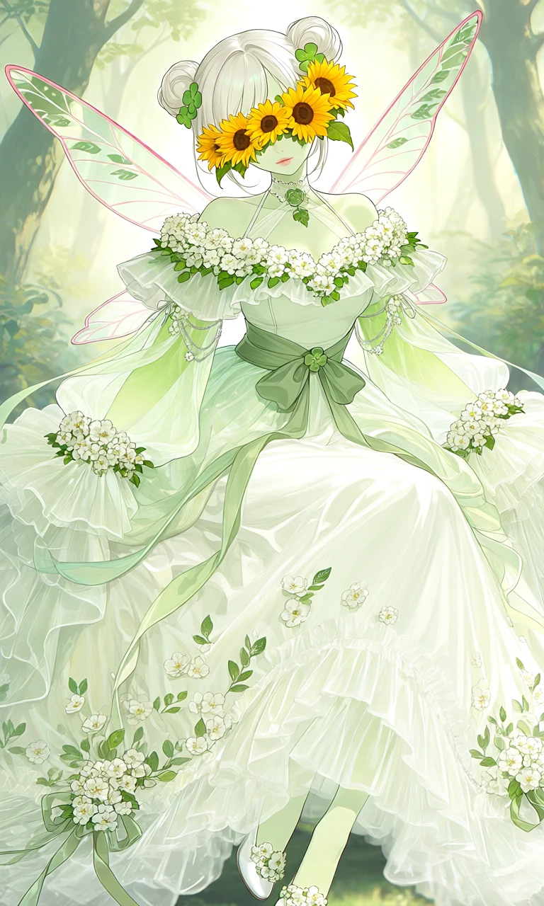

Jasmine Jubilee

Outfit Prompt
Outfit: The dress is a romantic, flowing, and voluminous with multiple layers of sheer fabric.
Neckline: High halter-style choker neck with a delicate green leaf medallion centerpiece. It connects via thin sheer straps to an off-the-shoulder design with a wide, ruffled neckline edged in dense white flowers and green foliage.
Bodice: Fitted through the torso with a smooth, pale base. The off-shoulder ruffles create a soft, romantic frame for the décolletage.
Waist: Cinched with a wide, structured sage-green sash/belt tied into a large, elegant bow at the front. Long ribbon tails drape gracefully down the skirt. A small green floral clasp sits at the center of the bow.
Sleeves: They start fitted at the shoulder, then billow out with sheer green-to-white gradient fabric. The cuffs are wide and flared, edged with more white flowers. Sheer ribbons or fabric chains with floral accents drape from the shoulders/sleeves.
Skirt: Extremely full, multi-layered, and floor-length with a slight train. The top layer is sheer and ruffled, creating soft waves and movement. Scattered real white blossoms and green leaves appear embroidered throughout, denser near the hem. Hem is asymmetrical and heavily ruffled, with additional floral clusters and trailing ribbons.
Outfit Examples



